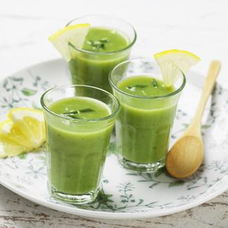

Le gaspacho au courgette et au curcuma recette
Ingrédients :
- 500 g de courgettes jaunes
- 1 oignon nouveau
- 2 brins de thym frais
- 2 brins de basilic
- 5 cl d'huile d'olive vierge extra
- 2 cl de vinaigre balsamique
- 1 citron
- 1 cuillère(s) à café de curcuma
- 10 cl d'eau
- 1 pincée de sel
- 1 pincée de poivre noir moulu
Préparation :
- Rincez et coupez en tronçons les courgettes. Émincez l’oignon. Lavez et effeuillez le thym et le basilic. Pressez le citron. Réservez quelques feuilles de basilic et de thym et quelques rondelles d’oignon. Mixez finement tous les ingrédients, et placez le gaspacho au frais 1 h.
- Servez bien frais avec quelques gouttes d’huile d’olive, des feuilles de basilic et de thym et quelques rondelles d’oignon nouveau.